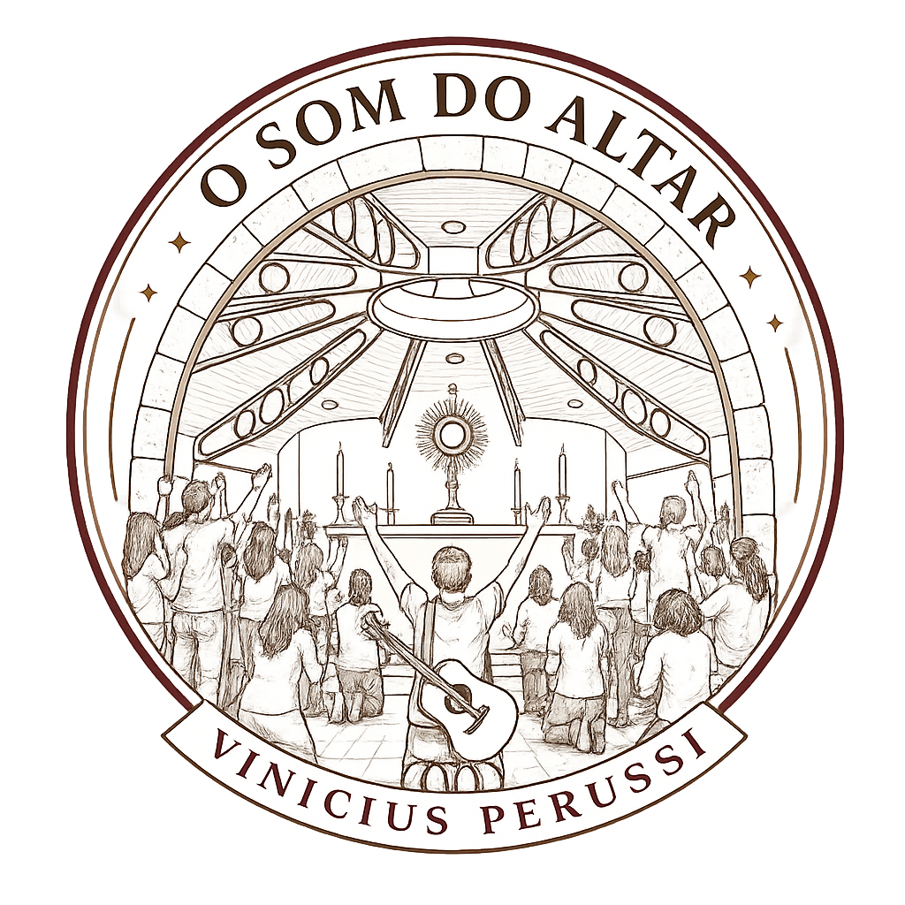

Prepare seu coração
Porém o incenso que fareis conforme essa composição, não o fareis para vós mesmos, santo será para o Senhor.
Êxodo 30, 37
Porém o incenso que fareis conforme essa composição, não o fareis para vós mesmos, santo será para o Senhor.
Êxodo 30, 37

O Som do AltarUma noite para registrar canções, testemunhos e o mover de Deus. Projeto com linguagem contemporânea, presença e excelência.
A contagem já começou para essa noite no altar.
Depois do Projeto, compartilhe o que Deus realizou em seu coração.
Pessoas e empresas que que foram essencais para a realização do projeto.

@perfil

@perfil

Serviços e apoio

@perfil

Som, luz e captação

@perfil

R. José Roschel Rodrigues, 940 - Sítio Laredo, São Paulo - SP, 04880-130